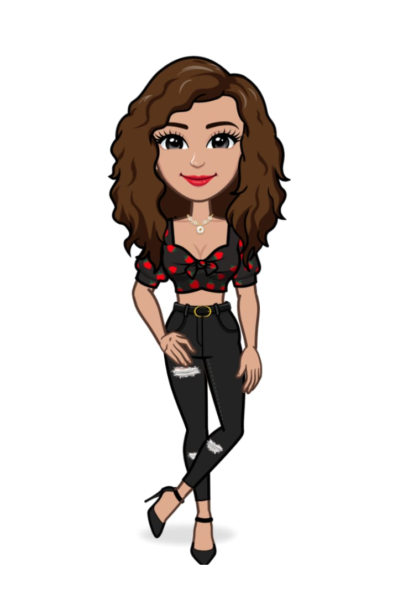

Tenho 18 anos e atualmente estou cursando análise e desenvolvimento de sistema, moro na Cidade de Virgem da Lapa, Estado de Minas Gerais, Vale do Jequitinhonha. Na escola adorava solucionar problemas de matemática e ajudar meus colegas com os mesmos, apesar de ser tímida sempre gostei de participar dos projetos escolares como teatro, dança, seminário também já fui representante de classe e aluna destaque.
Aos 16 anos fiz parte da primeira turma de formação de guarda mirim da minha cidade. A guarda me proporcionou muitas coisas, como disciplina, responsabilidade a oportunidade de participar de trabalhos voluntários e o meu primeiro emprego de jovem aprendiz como auxiliar de recepção onde tive minha primeira experiência de atendimento ao público e desenvolvi habilidades comunicativas. Gosto muito de experimentar coisas novas até mesmo já prestei o exército.
Durante pandemia fiz cursos de diversas áreas até encontrar OTechTaOn o curso que despertou o meu amor pela tecnologia, nele aprendi front-end e desenvolvi habilidades comportamentais e ao final do curso pude colocar tudo em prática no desenvolvimento de uma Landing page juntamente com o meu grupo. Esse ano tive a oportunidade de fazer parte da Generation em um bootcamp de uma jornada intensa com mais de 400 horas no período de 3 meses. desenvolvi habilidades técnicas como React, Java, Spring Framework, Metodologia Ágil Scrum, dentre outras que você pode encontrar no meu currículo, também pude aperfeiçoar minhas habilidades comportamentais, como comunicação, trabalho em equipe, persistência e produtividade botando tudo em prática nos trabalhos em grupos e ao final do bootcamp consegui a minha tão sonhada formação como Desenvolvedora Web Java Fullstack Júnior.
